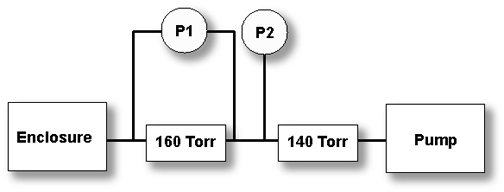

Operating Documentation
Direction 5440000, Rev# 5
Signa HDxt Service Methods
Module Version 1.0, Version Date 5/3/07
Operating Documentation |
Check the reading from the differential gauge and the pressure gauge.
The nominal readings for the two pressure gauges are:
Differential should be 10.7 inches of water (8 to 15 is considered acceptable).
Pressure should be –24.4 inches of mercury (-22 to –25 is considered acceptable).
If you suspect that either the Differential gauge or pressure gauge is defective, turn off the vacuum pump, and carefully open the vacuum system at the rear of the cabinet. Monitor both gauges. The pressure gauge should decrease to atmosphere. The Differential gauge should decrease to zero.
Re-connect the vacuum system and turn the vacuum pump on. The Pressure gauge should decrease to nominal vacuum level of –22 to -25 inches of mercury. Initially the differential gauge will increase to 30 inches of water. Eventually the Differential gauge should then decrease to 10.7 inches of water.
If Differential Gauge reads 0.00 in water, AND pressure gauge reads greater than zero inches of mercury or minimal vacuum, the 140 Torr regulator has failed, it is closed permanently.
If Differential Gauge reads 0.00 in water, AND pressure gauge reads nominal vacuum between –22 and –25 inches of mercury, the 160 Torr regulator has failed, it is open permanently.
If Differential Gauge reads greater than 30 inches of water, AND pressure gauge reads nominal vacuum level of -24 inches of mercury, the 160 Torr regulator has failed, in the closed location.
If Differential Gauge reads greater than 30 inches of water, AND pressure gauge reads greater than nominal vacuum level, approximately -26 inches of mercury, the 140 Torr regulator has failed, in the open location.
Conversions
140 Torr = -24.4 inches of Mercury for the pressure gauge used in the new TAC cabinet design.
20 Torr = 10.7 inches of water
Illustration 1: Vacuum Schematic

Illustration 2: Pump Description